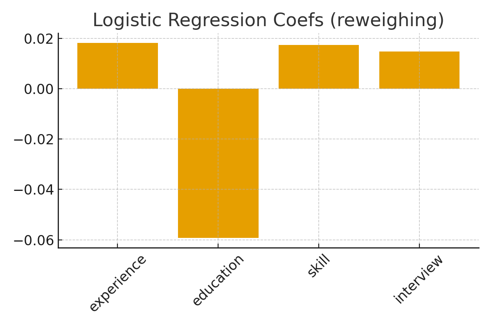

Bias-Aware Recruitment - Results (Static)
This static dashboard summarizes the pipeline outputs. For an interactive experience, run the notebook or integrate with Streamlit.
Model Performance
Mitigation Results

Files & Artifacts
- metrics_*.csv — model metrics
- fairness_* — fairness measure text files
- model_*.joblib — saved models
- local_explanations_nearest.csv — local explanations (nearest neighbor prototype)